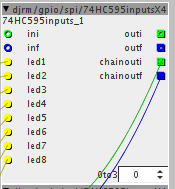

Forum profile: @Djeremaille
Contributor prefix: djrm
objects
djrm/gpio/spi/74HC595inputsX4
djrm/gpio/spi/74HC595_7segments
djrm/gpio/spi/74HC595_7segx2
djrm/logic/counter2_init_start

Forum profile: @Djeremaille
Contributor prefix: djrm
objects
djrm/gpio/spi/74HC595inputsX4
djrm/gpio/spi/74HC595_7segments
djrm/gpio/spi/74HC595_7segx2
djrm/logic/counter2_init_start
djrm/gpio/spi/74HC595inputsX4
Status
Ready to use
Description

Useful object to lit up to 32 leds.
Help file included.
You can see this post for more informations:
djrm/gpio/spi/74HC595_7segments
djrm/gpio/spi/74HC595_7segx2
Status
Ready to use
Description
With those you can drive 7 segments displays
Help files incuded
djrm/logic/counter2_init_start
Satus
Ready to use
Description
Version of the counter2 object by @johannes where you can define which position you start to count.
Help file included
@Djeremaille, Hi, was playing around with "counter2_init_start" and found when it arrived at the maximum it cycled back to zero.
Not sure if this was your intention, but if you don't mind, I fixed it with the attached.
Please feel free to take it and replace the other one if you want to.
counterplus.axo (1.5 KB)
Hi @Gavin !
I can't remember but I think this was my intention.
As I don't have time to do it, maybe you can put your version on your library if you find it useful.
{kind=link}